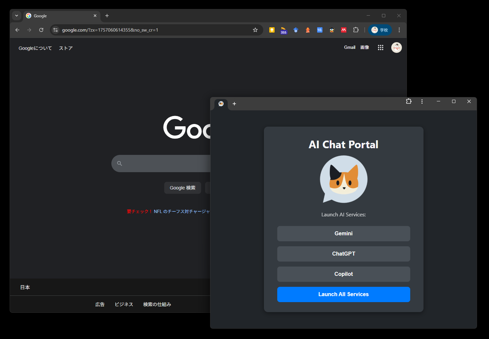
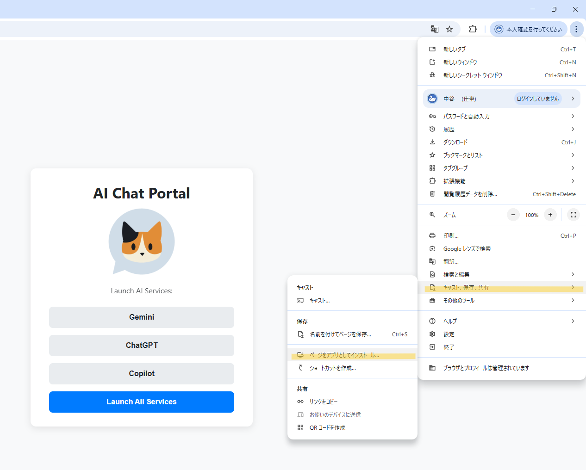

AI Chat Portalをご利用いただきありがとうございます。
このマニュアルは、本ポータルの便利な機能と、その能力を最大限に引き出すための設定手順を解説するものです。
AI Chat Portalは、複数の主要なAIチャットサービスを一つのウィンドウに集約し、タブで素早く切り替えて利用できるアプリケーションです。ブラウザのタブをいくつも開くことなく、思考を中断せずに様々なAIアシスタントを効率的に活用できます。
本ポータルは、Chromeの「Tabbed Application Mode」という技術を利用しています。この機能を最大限活用するために、次章のインストール手順をお読みください。
本ポータルをアプリのように使い、ウィンドウ内でタブ機能を利用するための設定手順を解説します。PC操作が苦手な方にも分かりやすいよう、図解で手順をまとめています。
重要なポイント（最初にお読みください）
ウィンドウ内でのタブ表示（Tabbed Application Mode）は、現時点（2025-09-05）でChromeOSでは標準対応、Windows / macOS / Linuxでは本ポータルようにアプリ側（PWA）が対応している場合にのみ有効となります。
WebサイトをPCに「アプリ」としてインストールできる仕組みです。デスクトップ等にアイコンが追加され、独立したウィンドウで起動します。
インストールしたPWA内で、ブラウザのように複数のタブを開ける機能です。本ポータルはこの機能に対応しています。

AI Chat PortalのWebページをGoogle Chromeで開きます。
Chrome右上の ︙ メニューをクリックし、「（アプリ名）をインストール」 を選択します。

インストール後、デスクトップのショートカットなどからアプリを起動します。ウィンドウ上部にタブバーが表示され、ポータル内のリンクから新しいタブが開けば設定完了です。
ご自身の環境でTabbed Application Modeがどのように動作するかは、Chromeチームが公開している公式デモページでも確認できます。
上記ページをChromeで開き、同様に「インストール」してアプリを起動すると、タブが表示されるかを確認できます。
Windowsキー + R を押して「ファイル名を指定して実行」ウィンドウを開き、 shell:startup と入力して Enter を押します。表示されるスタートアップフォルダへ アプリのショートカットをコピー＆ペースト すれば、次回PC起動時から自動的にアプリケーションウィンドウも立ち上がるようになります。
アプリウィンドウの右上メニュー ︙ → 「（アプリ名）をアンインストール」 を選択します。または、Chromeのアプリアイコン一覧ページ（アドレスバーに chrome://apps と入力）から対象アプリを右クリックして削除します。
お使いのChromeが最新版であるかご確認ください。それでも表示されない場合は、上記公式デモでタブが表示されるかをお試しください。デモでも表示されない場合、OSやChromeのバージョン、または組織のポリシー等が影響している可能性があります。
はい。以前はユーザーが手動で有効化する必要がありましたが、現在は仕様が変更され、PWA側が対応していれば自動でタブが有効になります。ユーザー側での `chrome://flags` の設定は不要です。
発行日：2025-09-05（JST）／ 作成：AI Assistant（ドキュメント統合・編集）